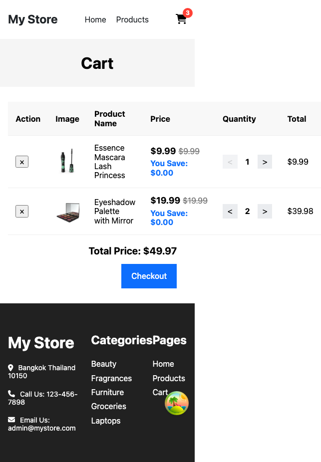

บทเรียน 18 · สร้างแอปทีละหน้า (Building Page by Page)
ระบบตะกร้าสินค้า
The Shopping Cart
หน้า Product Detail เสร็จแล้ว แต่ปุ่ม Add To Cart ยังไม่ทำอะไรจริงสักอย่าง เปิด modal ได้ก็จริง แต่ไม่มีตะกร้าให้เพิ่มอะไรเข้าไปเลย บทนี้ต่างจากบททั่วไปในสัปดาห์นี้ตรงที่งานส่วนแรกไม่ใช่การวน The Loop กับ Agent ทันที แต่เป็นการออกแบบ state ของทั้งแอปด้วยมือก่อน ด้วยเหตุผลเดียวกับบทที่ 15 ตอนออกแบบ query factory เอง: โครงสร้างตะกร้าสินค้าใช้ร่วมกันทั้งแอป พลาดจุดเดียวกระทบทุกหน้า จึงสำคัญเกินกว่าจะปล่อยให้ Agent เดาโครงเอง แล้วค่อยให้ Agent ช่วยส่วน UI ที่เหลือผ่าน The Loop ตามปกติ ถ้าจำได้ Week_04 บทเรียน 17 เคยสร้างตะกร้าด้วย Context + useState มาแล้วครั้งหนึ่ง รอบนี้จะทำแบบเดียวกันแต่เปลี่ยนมาใช้ useReducer แทน เพราะการกระทำกับตะกร้ามีมากกว่าหนึ่งแบบ (เพิ่ม ลบ แก้จำนวน ล้างทั้งหมด) — useReducer จัดการ action หลายแบบได้เป็นระเบียบกว่า useState เปล่า ๆ มาก
🎯 เป้าหมาย

เทียบกับเวอร์ชันมือถือ — รอบนี้มีอะไรน่าสังเกตกว่าปกติ

สังเกตความกว้างของไฟล์ภาพ mobile ให้ดี — 643 พิกเซล กว้างกว่าภาพมือถือทุกภาพที่เคยเห็นมาในคอร์สนี้เกือบเท่าตัว นั่นเพราะตารางหกคอลัมน์ของแอปต้นแบบไม่มี breakpoint ใด ๆ เลย เบราว์เซอร์เลยต้องขยายทั้งหน้าให้กว้างพอสำหรับตาราง แทนที่จะบีบตารางให้พอดีจอ 390px แบบที่ควรจะเป็น ปัญหาแบบเดียวกับที่บทที่ 11 เจอกับ Header คือ layout ที่ไม่ปรับตามขนาดจอ แต่คราวนี้ร้ายแรงกว่าเดิมเพราะทำให้ทั้งหน้าต้องเลื่อนแนวนอน ไม่ใช่แค่บาง section ถือว่างานของบทนี้ "เสร็จ" เมื่อ:
- ตะกร้ามี state กลางที่ทุกหน้าอ่าน/แก้ได้ (Context +
useReducer) และข้อมูล persist ข้าม reload ผ่าน localStorage - badge ตัวเลขที่ไอคอนตะกร้าใน Header นับจำนวนชิ้นจริงจากตะกร้า ไม่ใช่ "0" ที่ hardcode ไว้แบบตั้งแต่บทที่ 10
- หน้า Cart ที่ path
/cart: ตารางคอลัมน์ Action/Image/Product Name/Price/Quantity/Total ตรงกับ screenshot, ปุ่ม +/− ปรับจำนวน, ปุ่มลบ, Total Price รวม, ปุ่ม Checkout - บนมือถือ ตารางยุบเป็น card ต่อแถว ไม่ใช่ตารางแคบที่ต้องเลื่อนแนวนอนแบบใน
cart_mobile.png - ปุ่ม Add To Cart กับปุ่ม "ไปที่ตะกร้า" ใน modal จากบทที่ 17 ทำงานได้จริงแล้ว — เพิ่มสินค้าเข้าตะกร้าจริงและนำทางไปหน้า Cart จริง
ออกแบบ Context: CartContext.tsx
เริ่มจาก shape ของข้อมูล — CartItem หนึ่งชิ้นต้องรู้พอที่จะแสดงในตารางและคำนวณราคาได้โดยไม่ต้องย้อนไปถามหน้า Product Detail อีก และ CartActionTypes เป็น enum ที่รวมชื่อ action ทั้งหมดไว้ที่เดียว กัน typo ตอนเขียน dispatch ในไฟล์อื่น ๆ
// src/features/cart/store/CartContext.tsx
import { createContext } from "react";
export interface CartItem {
id: number;
title: string;
price: number;
quantity: number;
image: string;
originalPrice?: number;
}
export interface CartState {
items: CartItem[];
}
export interface CartContextProps {
cart: CartState;
addToCart: (item: CartItem) => void;
removeFromCart: (id: number) => void;
updateQuantity: (id: number, quantity: number) => void;
clearCart: () => void;
}
export enum CartActionTypes {
ADD_TO_CART = "ADD_TO_CART",
REMOVE_FROM_CART = "REMOVE_FROM_CART",
UPDATE_QUANTITY = "UPDATE_QUANTITY",
CLEAR_CART = "CLEAR_CART",
}
export const CartContext = createContext<CartContextProps | undefined>(undefined);
originalPrice เป็น optional เพราะไม่ใช่สินค้าทุกชิ้นมีส่วนลด ส่วน createContext<CartContextProps | undefined>(undefined) ใช้ undefined เป็นค่าเริ่มต้นแทนที่จะปั้น mock object ปลอม ๆ ขึ้นมา — ทบทวนจากบทที่ 6/6b ของ Week_04 (บทเรียน Context): generic ตรงนี้บอก TypeScript ว่า "ค่าจริงจะมาจาก Provider เสมอ ถ้าไม่มี Provider ห่ออยู่ ให้ถือว่าเป็นข้อผิดพลาด" ซึ่งเป็นสิ่งที่ useCart hook ด้านล่างจะตรวจสอบและ throw error ออกมาจริง ๆ ถ้าลืมห่อ Provider
cartReducer.ts: ตรรกะการเปลี่ยน state
action ทั้งสี่แบบ แต่ละแบบทำสิ่งเดียวเท่านั้น: ADD_TO_CART เช็คก่อนว่าสินค้าชิ้นนี้อยู่ในตะกร้าแล้วหรือยัง ถ้าอยู่แล้วบวกจำนวนเพิ่มเข้าไปแทนที่จะสร้างแถวซ้ำ, REMOVE_FROM_CART กรองชิ้นที่ id ตรงออก, UPDATE_QUANTITY map หาชิ้นที่ id ตรงแล้วแทนที่จำนวน, CLEAR_CART ล้าง items ทั้งหมด
// src/features/cart/store/cartReducer.ts
import { CartActionTypes, CartItem, CartState } from "./CartContext";
export type CartAction =
| { type: CartActionTypes.ADD_TO_CART; payload: CartItem }
| { type: CartActionTypes.REMOVE_FROM_CART; payload: { id: number } }
| { type: CartActionTypes.UPDATE_QUANTITY; payload: { id: number; quantity: number } }
| { type: CartActionTypes.CLEAR_CART };
export function cartReducer(state: CartState, action: CartAction): CartState {
switch (action.type) {
case CartActionTypes.ADD_TO_CART: {
const { id, title, price, quantity = 1, image, originalPrice } = action.payload;
const existingItem = state.items.find((item) => item.id === id);
if (existingItem) {
return {
...state,
items: state.items.map((item) =>
item.id === id ? { ...item, quantity: item.quantity + quantity } : item,
),
};
}
return {
...state,
items: [...state.items, { id, title, price, quantity, image, originalPrice }],
};
}
case CartActionTypes.REMOVE_FROM_CART: {
return { ...state, items: state.items.filter((item) => item.id !== action.payload.id) };
}
case CartActionTypes.UPDATE_QUANTITY: {
return {
...state,
items: state.items.map((item) =>
item.id === action.payload.id ? { ...item, quantity: action.payload.quantity } : item,
),
};
}
case CartActionTypes.CLEAR_CART: {
return { ...state, items: [] };
}
default:
return state;
}
}
CartAction เป็น discriminated union — TypeScript รู้เองว่า action.payload มี shape อะไรใน case แต่ละอันจาก action.type โดยไม่ต้อง cast เอง นี่คือเหตุผลที่คุ้มค่าจะเขียน type ของ action ให้ครบทุกแบบตั้งแต่แรก แทนที่จะปล่อยเป็น any
cartStorage.ts: เก็บตะกร้าไว้ใน localStorage
ต้องมีจุดเดียวที่รู้วิธีอ่าน/เขียน localStorage ของตะกร้า ไม่กระจายให้ไฟล์อื่นเรียก localStorage.getItem ตรง ๆ เอง
// src/features/cart/store/cartStorage.ts
import { CartState } from "./CartContext";
export const CART_STORAGE_KEY = "ecommerce-cart:v1";
const EMPTY: CartState = { items: [] };
export function loadCartState(): CartState {
try {
const raw = localStorage.getItem(CART_STORAGE_KEY);
if (!raw) return EMPTY;
const parsed: unknown = JSON.parse(raw);
if (typeof parsed === "object" && parsed !== null && Array.isArray((parsed as CartState).items)) {
return parsed as CartState;
}
return EMPTY;
} catch {
return EMPTY;
}
}
export function saveCartState(state: CartState): void {
try {
localStorage.setItem(CART_STORAGE_KEY, JSON.stringify(state));
} catch {
// Storage เต็มหรือถูกปิดใช้งาน — ตะกร้าแค่ไม่ persist รอบนี้ ไม่ต้อง throw ทำแอปพัง
}
}
ทำไมต้อง try ทั้งสองทิศทางแยกกัน — ฝั่งอ่าน (loadCartState) อาจพังได้จากหลายสาเหตุที่ควบคุมไม่ได้: ผู้ใช้แก้ค่าใน DevTools เอง, เวอร์ชันเก่าของแอปเขียน shape ไม่ตรงกัน, หรือ private browsing บางเบราว์เซอร์บล็อก localStorage ทั้งหมด ถ้าไม่ดัก error ตรงนี้ แอปจะ crash ตั้งแต่โหลดหน้าแรก ก่อนแม้แต่จะแสดงอะไรได้เลย ส่วนฝั่งเขียน (saveCartState) พังได้จาก storage เต็มโควต้าหรือถูกปิดสิทธิ์ — เคสนี้ปล่อยผ่านเงียบ ๆ ได้ เพราะตะกร้ายังใช้งานได้ปกติใน session ปัจจุบัน แค่จะไม่ค้างอยู่ตอน reload เท่านั้น ทั้งสองเคสมีระดับความร้ายแรงต่างกัน แต่ทั้งคู่ต้องไม่ทำให้ทั้งแอปพัง — นี่คือเหตุผลว่าทำไมต้องแยก try เป็นสองจุด ไม่ใช่ครอบทั้งไฟล์ด้วยอันเดียว
CartProvider.tsx และ useCart hook
ประกอบทุกอย่างเข้าด้วยกัน — useReducer(cartReducer, undefined, loadCartState) คือ lazy initialization: อาร์กิวเมนต์ที่สามเป็นฟังก์ชันที่ React เรียกแค่ครั้งเดียวตอน mount แรกเท่านั้นเพื่อคำนวณ state เริ่มต้น ต่างจากการเรียก loadCartState() ตรง ๆ เป็นอาร์กิวเมนต์ที่สอง (ซึ่งจะเรียกทุก render โดยไม่จำเป็น) แล้ว useEffect คอย save ทุกครั้งที่ cart เปลี่ยน
// src/features/cart/store/CartProvider.tsx
import { ReactNode, useCallback, useEffect, useReducer } from "react";
import { CartActionTypes, CartContext, CartItem } from "./CartContext";
import { cartReducer } from "./cartReducer";
import { loadCartState, saveCartState } from "./cartStorage";
export function CartProvider({ children }: { children: ReactNode }) {
const [cart, dispatch] = useReducer(cartReducer, undefined, loadCartState);
useEffect(() => {
saveCartState(cart);
}, [cart]);
const addToCart = useCallback((item: CartItem) => {
dispatch({ type: CartActionTypes.ADD_TO_CART, payload: item });
}, []);
const removeFromCart = useCallback((id: number) => {
dispatch({ type: CartActionTypes.REMOVE_FROM_CART, payload: { id } });
}, []);
const updateQuantity = useCallback((id: number, quantity: number) => {
dispatch({ type: CartActionTypes.UPDATE_QUANTITY, payload: { id, quantity } });
}, []);
const clearCart = useCallback(() => {
dispatch({ type: CartActionTypes.CLEAR_CART });
}, []);
return (
<CartContext.Provider value={{ cart, addToCart, removeFromCart, updateQuantity, clearCart }}>
{children}
</CartContext.Provider>
);
}
💡 ห่อ action ทั้งสี่ด้วย useCallback (deps ว่าง) แม้ต้นฉบับจะไม่ได้ทำไว้ก็ตาม — dispatch จาก useReducer มี reference คงที่ตลอดอายุ component อยู่แล้วตามสัญญาของ React ดังนั้นห่อด้วย useCallback จึงปลอดภัยเสมอ และทำให้ addToCart/removeFromCart/ฯลฯ มี reference คงที่ข้าม re-render ไปด้วย มีประโยชน์ถ้า component ลูกเอาไปใส่ dependency array ของ useEffect ตัวเอง เป็นการปรับเล็กน้อยจากต้นฉบับที่ทำได้ฟรีโดยไม่มีข้อเสีย
ปิดท้ายด้วย hook ที่ทุก component จะเรียกใช้จริง — มี guard กัน component ที่อยู่นอก CartProvider ไม่ให้ได้ undefined มาเงียบ ๆ แล้วพังตอนพยายามอ่าน cart.items
// src/features/cart/useCart.ts
import { useContext } from "react";
import { CartContext } from "./store/CartContext";
export function useCart() {
const context = useContext(CartContext);
if (!context) {
throw new Error("useCart must be used within a CartProvider");
}
return context;
}
สุดท้ายห่อทั้งแอปด้วย CartProvider ใน providers.tsx — ไฟล์เดียวกับที่บทที่ 15 ทิ้งท้ายไว้ว่าจะกลับมาเพิ่ม
// src/app/providers.tsx
import { ReactNode } from "react";
import { QueryClientProvider } from "@tanstack/react-query";
import { queryClient } from "./queryClient";
import { CartProvider } from "@/features/cart/store/CartProvider";
export function AppProviders({ children }: { children: ReactNode }) {
return (
<QueryClientProvider client={queryClient}>
<CartProvider>{children}</CartProvider>
</QueryClientProvider>
);
}
state ของตะกร้าพร้อมใช้งานจริงทั้งแอปแล้ว ตอนนี้ถึงเวลาเปิด Agent panel วน The Loop สร้าง UI ที่ใช้ของทั้งหมดนี้
📝 เขียน Prompt
สร้าง CartTable และหน้า Cart ของเว็บ "My Store" ตาม screenshot ที่แนบมา (path /cart)
บริบท: โปรเจกต์ my-store มี useCart() hook อยู่แล้วที่ features/cart/useCart.ts คืนค่า { cart, addToCart, removeFromCart, updateQuantity, clearCart } และมี Button component ที่ shared/components/Button
โครงสร้างจากบนลงล่าง:
- แถบเทาด้านบนแสดงคำว่า Cart (แบบเดียวกับแถบชื่อสินค้าในหน้า Product Detail)
- ตารางสินค้า คอลัมน์ Action / Image / Product Name / Price / Quantity / Total: Action เป็นปุ่มลบ (×), Price แสดงราคาปัจจุบันและถ้ามี originalPrice ให้ขีดฆ่าราคาก่อนลด, Quantity มีปุ่มลดและปุ่มเพิ่มจำนวน, Total คือ price คูณ quantity ต่อแถว
- ใต้ตาราง: Total Price รวมทุกแถว และปุ่ม Checkout สีน้ำเงิน ชิดขวา
ข้อกำหนดทางเทคนิค:
- ดึงข้อมูลตะกร้าและฟังก์ชันทั้งหมดจาก useCart() ที่มีอยู่แล้ว ไม่ต้องสร้าง state ใหม่เอง
- บนจอ md ขึ้นไปแสดงเป็นตาราง บนมือถือ (ต่ำกว่า md) ให้ยุบเป็น card ต่อแถวแทน ไม่ใช่ตารางแคบที่ต้องเลื่อนแนวนอน
- ใช้ Button component ที่มีอยู่สำหรับปุ่มทุกปุ่ม (variant outline สำหรับปุ่มปรับจำนวน)
- ทุกรูปมี alt, mobile-first, semantic HTML
ขอบเขต: ยังไม่ต้องทำ empty state แบบมีรูปประกอบสวยงาม ข้อความธรรมดาพอ🤖 สิ่งที่ Agent สร้าง
วาง prompt พร้อมรูป cart_desktop.png แล้วปล่อยให้ Agent ทำงาน — นี่คือแถวหนึ่งของ CartTable ที่ได้มา ตัดมาเฉพาะส่วนที่น่าสนใจ
// src/features/cart/components/CartTable/CartTable.tsx (ตัดมาเฉพาะแถวเดียว จากเวอร์ชันแรก)
<tr key={item.id}>
<td>
<button onClick={() => onRemoveItem(item.id)} className="text-gray-400 hover:text-danger">
×
</button>
</td>
<td><img src={item.image} alt={item.title} className="h-16 w-16 rounded object-cover" /></td>
<td>{item.title}</td>
<td>
<span className="font-semibold">${item.price.toFixed(2)}</span>
{item.originalPrice && (
<span className="ml-2 text-sm text-gray-400 line-through">${item.originalPrice.toFixed(2)}</span>
)}
</td>
<td>
<div className="flex items-center gap-2">
<Button variant="outline" onClick={() => onUpdateQuantity(item.id, item.quantity - 1)}><</Button>
<span>{item.quantity}</span>
<Button variant="outline" onClick={() => onUpdateQuantity(item.id, item.quantity + 1)}>></Button>
</div>
</td>
<td>${(item.price * item.quantity).toFixed(2)}</td>
</tr>ครบทุกคอลัมน์ตามที่ขอ แต่ยังเป็นแค่ตารางเดสก์ท็อปเพียวเดียว ไม่มีเวอร์ชันมือถือมาให้เลย และหลายจุดยังไม่ผ่านการตรวจทาน
🔍 ตรวจทาน
responsive — Agent ไม่ได้ทำ mobile card list ตามที่ prompt ขอเลย ปล่อยตารางเดสก์ท็อปแบบเดียวไว้ทุกขนาดจอ ย่อจอลงมาที่ 390px แล้วเจอปัญหาเดียวกับที่เห็นใน cart_mobile.png เป๊ะ — ตารางไม่ยอมยุบ ต้องเลื่อนแนวนอนถึงจะเห็นครบทุกคอลัมน์ ทั้งที่ prompt สั่งไว้ชัดเจนว่ามือถือต้องยุบเป็น card
accessibility — ปุ่ม +/− ไม่มี aria-label เลย มีแค่สัญลักษณ์ < และ > ซึ่งไม่บอกอะไรกับ screen reader ว่ากำลังปรับจำนวนของสินค้าชิ้นไหน ปัญหาเดียวกับไอคอนตะกร้าที่ Header เจอในบทที่ 12 ปุ่มลบก็เช่นกัน มีแค่ "×" ลอย ๆ และปุ่มลดจำนวนกดได้เรื่อย ๆ แม้จำนวนจะเหลือ 1 อยู่แล้ว (กดต่อจะได้ 0 หรือติดลบ ซึ่งไม่ควรเกิดขึ้น) จุดที่ผ่านคือราคาทุกจุดเป็นข้อความจริง ไม่ใช่รูปภาพ ตรงตาม checklist บทที่ 12 อยู่แล้วตั้งแต่รอบแรก
maintainability — ${item.price.toFixed(2)} ปรากฏอยู่ 4 ครั้งในไฟล์เดียวนี้ไฟล์เดียว (ราคา, ราคาก่อนลด, total ต่อแถว, และจะมีอีกจุดที่ Total Price รวมท้ายตาราง) รูปแบบเดียวกับปัญหาปุ่มซ้ำในบทที่ 13 — สูตร format เงินควรมีจุดเดียวทั้งแอป โดยเฉพาะเมื่อรู้อยู่แล้วว่าบทที่ 19 (Checkout) จะต้องโชว์ตัวเลขเงินอีกหลายจุด ยิ่งไม่รวมตอนนี้ ยิ่งมีจุดให้ไล่แก้ทีหลังมากขึ้น
🔧 Refactor
แก้ maintainability ก่อน เพราะกระทบไฟล์อื่นน้อยที่สุดและ 🔍 จุดอื่นจะพึ่งพาผลลัพธ์ตรงนี้
// src/shared/utils/price.utils.ts
export function formatPrice(amount: number): string {
return `$${amount.toFixed(2)}`;
}
แล้วประกอบ CartTable ใหม่ทั้งไฟล์ — ใช้ formatPrice แทน toFixed(2) สด ๆ ทุกจุด เพิ่ม aria-label ให้ปุ่มทั้งหมด ปิดปุ่มลดจำนวนตอนเหลือ 1 ชิ้น และเพิ่มเวอร์ชันมือถือเป็น card list คู่กับตารางเดสก์ท็อป สลับกันด้วย hidden md:table / md:hidden
// src/features/cart/components/CartTable/CartTable.tsx — เวอร์ชันสมบูรณ์
import { useCart } from "@/features/cart/useCart";
import Button from "@/shared/components/Button/Button";
import { formatPrice } from "@/shared/utils/price.utils";
interface CartTableProps {
onRemoveItem: (id: number) => void;
onUpdateQuantity: (id: number, quantity: number) => void;
}
export default function CartTable({ onRemoveItem, onUpdateQuantity }: CartTableProps) {
const { cart } = useCart();
return (
<>
<table className="hidden w-full md:table">
<thead>
<tr className="border-b border-gray-200 text-left text-sm text-gray-500">
<th className="py-2">Action</th>
<th>Image</th>
<th>Product Name</th>
<th>Price</th>
<th>Quantity</th>
<th>Total</th>
</tr>
</thead>
<tbody>
{cart.items.map((item) => (
<tr key={item.id} className="border-b border-gray-100">
<td className="py-4">
<button
type="button"
aria-label={`ลบ ${item.title} ออกจากตะกร้า`}
onClick={() => onRemoveItem(item.id)}
className="text-gray-400 hover:text-danger"
>
×
</button>
</td>
<td><img src={item.image} alt={item.title} className="h-16 w-16 rounded object-cover" /></td>
<td>{item.title}</td>
<td>
<span className="font-semibold">{formatPrice(item.price)}</span>
{item.originalPrice && (
<span className="ml-2 text-sm text-gray-400 line-through">{formatPrice(item.originalPrice)}</span>
)}
</td>
<td>
<div className="flex items-center gap-2">
<Button
variant="outline"
disabled={item.quantity <= 1}
aria-label={`ลดจำนวน ${item.title}`}
onClick={() => onUpdateQuantity(item.id, item.quantity - 1)}
>
<
</Button>
<span>{item.quantity}</span>
<Button
variant="outline"
aria-label={`เพิ่มจำนวน ${item.title}`}
onClick={() => onUpdateQuantity(item.id, item.quantity + 1)}
>
>
</Button>
</div>
</td>
<td>{formatPrice(item.price * item.quantity)}</td>
</tr>
))}
</tbody>
</table>
<ul className="flex flex-col gap-4 md:hidden">
{cart.items.map((item) => (
<li key={item.id} className="rounded-lg border border-gray-200 p-4">
<div className="flex gap-3">
<img src={item.image} alt={item.title} className="h-16 w-16 rounded object-cover" />
<div className="flex-1">
<p className="font-medium">{item.title}</p>
<p className="text-sm text-gray-500">{formatPrice(item.price)}</p>
</div>
<button
type="button"
aria-label={`ลบ ${item.title} ออกจากตะกร้า`}
onClick={() => onRemoveItem(item.id)}
className="text-gray-400 hover:text-danger"
>
×
</button>
</div>
<div className="mt-3 flex items-center justify-between">
<div className="flex items-center gap-2">
<Button
variant="outline"
disabled={item.quantity <= 1}
aria-label={`ลดจำนวน ${item.title}`}
onClick={() => onUpdateQuantity(item.id, item.quantity - 1)}
>
<
</Button>
<span>{item.quantity}</span>
<Button
variant="outline"
aria-label={`เพิ่มจำนวน ${item.title}`}
onClick={() => onUpdateQuantity(item.id, item.quantity + 1)}
>
>
</Button>
</div>
<span className="font-semibold">{formatPrice(item.price * item.quantity)}</span>
</div>
</li>
))}
</ul>
</>
);
}
ตารางกับ card list ดึงจาก cart.items เดียวกันเป๊ะ แค่คนละ markup — hidden md:table ซ่อนตารางบนจอแคบแล้วโชว์เป็น table จริงตั้งแต่ md ขึ้นไป ส่วน md:hidden ทำตรงข้าม การมีสอง markup คู่กันแบบนี้ยอมรับได้เพราะโครงสร้าง HTML ของตารางกับ card ต่างกันจริง (ตารางต้องการ <table><tr><td> ที่ browser คาดหวังโครงสร้างเฉพาะ ผสมกับ flex card ไม่ได้ในสวยงาม) ไม่เหมือนกรณี Home.tsx ในบทที่ 14 ที่เป็นแค่กริดที่เปลี่ยนจำนวนคอลัมน์ตาม breakpoint เดียวกันได้
ประกอบ CartTable เข้ากับหน้า Cart.tsx จริง — ปุ่ม Checkout เรียก goToCheckout จาก useProductRoute ที่สร้างไว้ตั้งแต่บทที่ 16 (อีกหนึ่งฟังก์ชันที่รอปลายทางมานาน เพิ่งได้ใช้ครั้งแรกที่นี่)
// src/pages/Cart/Cart.tsx
import { useMemo } from "react";
import { useCart } from "@/features/cart/useCart";
import useProductRoute from "@/shared/hooks/useProductRoute";
import CartTable from "@/features/cart/components/CartTable/CartTable";
import Button from "@/shared/components/Button/Button";
import { formatPrice } from "@/shared/utils/price.utils";
export default function Cart() {
const { cart, removeFromCart, updateQuantity } = useCart();
const { goToCheckout } = useProductRoute();
const totalPrice = useMemo(
() => cart.items.reduce((sum, item) => sum + item.price * item.quantity, 0),
[cart.items],
);
return (
<div>
<div className="bg-gray-100 py-8 text-center">
<h1 className="text-2xl font-bold">Cart</h1>
</div>
<div className="mx-auto max-w-7xl px-4 py-10 sm:px-6 lg:px-8">
{cart.items.length === 0 ? (
<p className="py-20 text-center text-gray-500">ตะกร้าของคุณยังว่างอยู่</p>
) : (
<>
<CartTable onRemoveItem={removeFromCart} onUpdateQuantity={updateQuantity} />
<div className="mt-6 flex flex-col items-end gap-3">
<p className="text-xl font-bold">Total Price: {formatPrice(totalPrice)}</p>
<Button onClick={goToCheckout}>Checkout</Button>
</div>
</>
)}
</div>
</div>
);
}
💡 แถบเทา "Cart" ด้านบนของ Cart.tsx ก็คือ <div className="bg-gray-100 py-8 text-center"><h1 className="text-2xl font-bold">...</h1></div> ตัวเดียวกันเป๊ะกับที่ Product.tsx เขียนไว้ในบทที่แล้ว — นี่คือจุดที่สองแล้ว ยังไม่ถึงเวลาแยกเป็น component ตามกติกาบทที่ 13 (2 จุดพอจะแยกได้แล้วจริง ๆ) แต่บทนี้โฟกัสอยู่ที่ตะกร้าเต็มที่ ขอเก็บสังเกตนี้ไว้ก่อน แล้วกลับมาจัดการรวดเดียวตอนบทหน้าที่จุดที่สามโผล่มา
ต่อ Header — badge เคยเป็นเลข "0" ตายตัวมาตั้งแต่บทที่ 10 ตอนนี้อ่านจากตะกร้าจริงแล้ว
// src/shared/components/Header/Header.tsx (แก้เฉพาะจุด)
import { useCart } from "@/features/cart/useCart";
export default function Header() {
const [isMenuOpen, setIsMenuOpen] = useState(false);
const { cart } = useCart();
const itemCount = cart.items.reduce((sum, item) => sum + item.quantity, 0);
return (
// ...
<Link
to="/cart"
aria-label={`ตะกร้าสินค้า มี ${itemCount} ชิ้น`}
className="relative rounded focus-visible:outline-none focus-visible:ring-2 focus-visible:ring-primary/50"
>
<svg className="h-6 w-6" viewBox="0 0 24 24" fill="none" stroke="currentColor" aria-hidden="true">
<path d="M3 3h18l-2 12H5L3 3z" strokeWidth="2" />
</svg>
{itemCount > 0 && (
<span className="absolute -right-2 -top-2 flex h-4 w-4 items-center justify-center rounded-full bg-primary text-[10px] text-white">
{itemCount}
</span>
)}
</Link>💡 badge ตอนนี้ซ่อนไปเลยเมื่อ itemCount เป็น 0 แทนที่จะโชว์ "0" ค้างไว้ — สังเกตจาก product_desktop.png ในบทที่แล้ว: ไอคอนตะกร้าไม่มี badge ติดอยู่เลยตอนตะกร้ายังว่าง แต่ cart_desktop.png/checkout_desktop.png ใน screenshot ของบทนี้มี badge แดงเลข 3 ทั้งคู่ ตอนตะกร้ามีของแล้ว — พฤติกรรมสอดคล้องกับที่เห็นในทั้งสองภาพ
💡 Header.tsx อยู่ใน shared/components/ แต่ตอนนี้ import useCart จาก features/cart/ เข้ามาโดยตรง — เทคนิคๆ แล้วขัดกับกฎ "shared ไม่ควรพึ่งพา features" ที่เข้มงวด แต่เป็นทางลัดที่ยอมรับได้ในสเกลของแอปนี้ เพราะ Header เป็น component เดียวในแอปที่ต้องรู้จักตะกร้า ถ้าจะให้ถูกหลักเป๊ะ ต้องยก useCart() ไปเรียกที่ MainLayout แล้วส่ง itemCount ลงมาเป็น prop แทน — ทางเลือกที่ใช้ได้เหมือนกัน แต่เพิ่ม prop drilling ให้กับ component ที่มีจุดประสงค์เดียว ในแอปที่ใหญ่ขึ้นค่อยพิจารณาใหม่
สุดท้ายกลับไปที่ modal จากบทที่ 17 — ปุ่ม Add To Cart บนหน้า Product Detail ต้องเรียก addToCart จริงก่อนเปิด modal
// src/pages/Product/Product.tsx (แก้เฉพาะจุด)
import { useCart } from "@/features/cart/useCart";
export default function Product() {
// ...
const { addToCart } = useCart();
const onAddToCart = () => {
if (!product) return;
addToCart({
id: product.id,
title: product.title,
price: product.price,
quantity: 1,
image: product.thumbnail,
originalPrice: originalPrice ?? undefined,
});
setIsModalOpen(true);
};
// ...
<Button onClick={onAddToCart}>Add To Cart</Button>และปุ่ม "ไปที่ตะกร้า" ใน modal เปลี่ยนจาก console.log เป็น goToCartSummary จริงจาก useProductRoute ที่สร้างไว้ตั้งแต่บทที่ 16
// src/features/products/components/ProductAddedModal/ProductAddedModal.tsx (แก้เฉพาะจุด)
import useProductRoute from "@/shared/hooks/useProductRoute";
export default function ProductAddedModal({ isOpen, productTitle, onClose }: ProductAddedModalProps) {
const { goToCartSummary } = useProductRoute();
const onGoToCart = () => {
goToCartSummary();
};
// ปุ่ม "ไปที่ตะกร้า" เรียก onGoToCart เหมือนเดิม ไม่ต้องแก้ JSX เพิ่มเพิ่ม route /cart เข้า router.tsx — ครบสี่ route แล้ว
// src/app/router.tsx
import { createBrowserRouter } from "react-router";
import MainLayout from "@/app/layouts/MainLayout/MainLayout";
import Home from "@/pages/Home/Home";
import Category from "@/pages/Category/Category";
import Product from "@/pages/Product/Product";
import Cart from "@/pages/Cart/Cart";
const router = createBrowserRouter([
{
path: "/",
element: <MainLayout />,
children: [
{ index: true, element: <Home /> },
{ path: "categories", element: <Category /> },
{ path: "products/:id", element: <Product /> },
{ path: "cart", element: <Cart /> },
],
},
]);
export default router;
git add -A
git commit -m "feat: add cart state, wire header badge, and build Cart page"
ตะกร้าใช้งานได้จริงครบวงจรเป็นครั้งแรก — เพิ่มสินค้าจากหน้า Product Detail, badge ที่ Header นับจริง, ปรับจำนวนหรือลบสินค้าที่หน้า Cart, ปิดเบราว์เซอร์แล้วเปิดใหม่ก็ยังอยู่ครบเพราะ localStorage เก็บไว้ให้ ปุ่ม Checkout ที่หน้า Cart พาไป /checkout ที่ยังไม่มีจริงเช่นกัน บทหน้าเราจะสร้างปลายทางนั้น พร้อมกับหน้า Order Success ปิดท้ายทั้งแอป